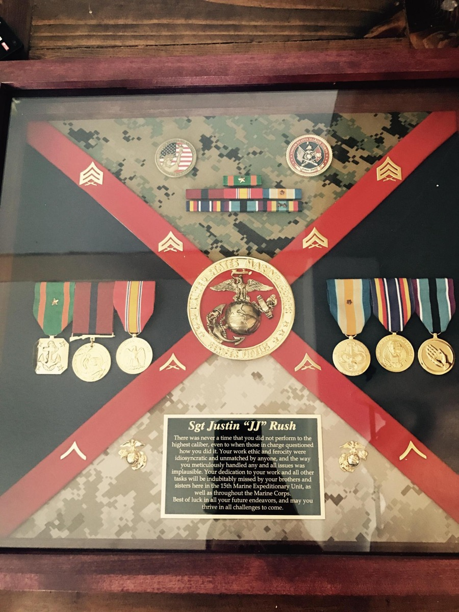

About
The work is the resume.
This is the why.
Washington, Start to Finish
I was born and raised in Washington State, and today I live in Enumclaw — in the house of my dreams — with my wife Brittany, our sons Jameson ("Jamo") and Rogan ("Rogue Bear"), and Frankie the French Bulldog. Off the clock you'll find me tinkering with my 3D printer, smoking meat, reading, or running two companies alongside my wife.
The Marine Corps Years
I enlisted in 2011 and spent six years in Marine Corps logistics, directing operations across the Asia-Pacific and the continental U.S. — $15B+ in global assets, multinational training exercises, and rapid-deployment operations. I left with two Navy & Marine Corps Achievement Medals, a meritorious promotion, and a definition of pressure that has made every deadline since feel manageable.
Typhoon Haiyan
The award I hold closest is the Humanitarian Service Medal. In November 2013, Typhoon Haiyan devastated the Philippines — 8 million people affected. A 2:15 AM phone call sent me across an island to an airstrip, and days later I was loading helicopters with water bound for cut-off villages.
Ten months earlier, during an exercise in that same region, a helicopter had crash-landed mid-retrograde and I'd had to negotiate — through a translator, with $350 and a pallet of MREs — for a local truck driver's help recovering it. In the middle of the typhoon relief effort, a hand landed on my shoulder: the same Philippine Marine who had translated for me, exhausted, helping his own country dig out. That moment rewired how I think about empathy, connection, and why logistics matters. It's people, all the way down.
Giving Back
Stationed in California, I spent my weekends for three years with at-risk youth across Los Angeles — picking kids up in Compton and Long Beach on Friday nights and spending weekends teaching them land navigation, survival skills, gardening, and self-respect. Since 2011 I've logged 800+ volunteer hours across 8 countries and 13 nonprofits. For me, the greatest gift is bringing success to the people who need it most.
The Family Thread
In 1919 my great-grandfather emigrated from Ukraine to Tacoma and built the Bone-Dry Shoe Company — a four-decade enterprise. A century later, my wife's family runs Green City Heating & A/C, where I serve as co-owner and strategic advisor. Building durable businesses that take care of their people isn't a career strategy for me. It's the family trade.

"I do not define success as a single finish line. I define success as the collective learning experience and relentless pursuit of perfecting the process — while ensuring to bring as many people as possible along on the journey."— How I define success
Honors & Service